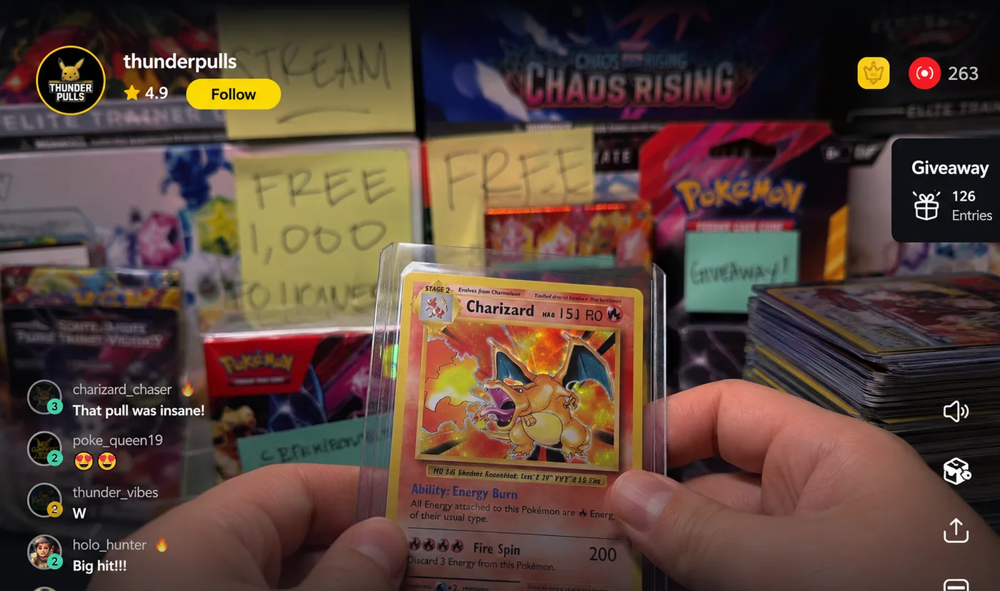
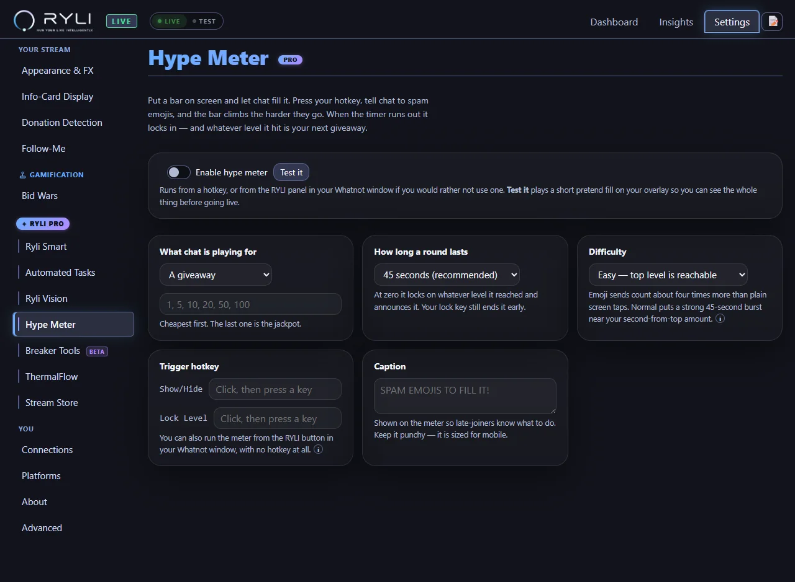
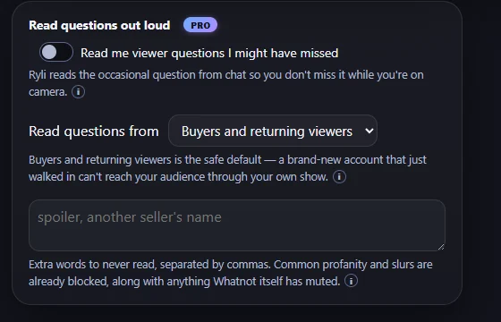
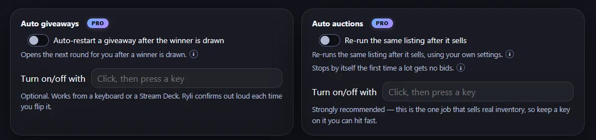
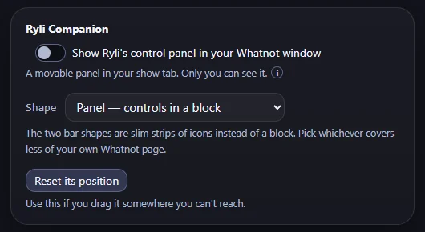

A quiet room is a solvable problem.
Four things that make a stream react, all of them driven by what the room is actually doing rather than by you asking twice. A meter chat fills on cue, announcements that fire on their own, viewer questions read out loud, and a control panel that lives inside your own stream tab.
- The Hype Meter — one key, and chat has something to push at PRO
- Four scheduled announcements, on hotkeys or timers PRO
- Viewer questions read aloud, filtered and rate-limited PRO
- Every control, inside the tab you are already looking at

Give the room something to push at.
Press one key and a bar and a countdown appear on your stream. Chat fills it by spamming emojis; the higher it climbs, the bigger the giveaway. At zero it locks itself in and Ryli announces the prize out loud.
- Six prize tiers by default — $1, $5, $10, $20, $50, $100 — and they are yours to change
- A live counter of how many different people are joining in, which is the number that matters
- 45 seconds by default, on a clock the whole room can see
- No giveaway budget? Run it in hype-only mode and just get the room loud
- Two hotkeys — start it, and lock it early when the moment peaks
Whatnot's own engineering team has published that user actions, including chats and reactions, are counted in real time and feed the service that ranks which livestreams get promoted. RYLI never simulates any of it — every tap and message is a real viewer.

Four announcements that fire without you.
The things you say every show — follow the page, the giveaway rules, where the shipping tiers are — posted into your own chat as a real announcement. Each of the four is independent: its own message, its own hotkey, its own timer.
On a key
Bind any slot to a hotkey and post it the moment it is relevant, without tabbing away from your show.
Or on a timer
Every 5, 10, 15, 20, 30, 45 or 60 minutes. Presets only, deliberately — there is no setting here that lets you spam your own room.
Said out loud too
Optionally Ryli reads the same line, so the people not watching chat still hear it.
Never back to back
A 60-second floor between any two sends, whichever slot fired. Two timers landing together cannot double-post.
Messages are capped at 150 characters — Whatnot's own limit, not one we invented.
The question you missed gets asked anyway.
Chat moves faster than you can read it while you are holding a card up to a camera. RYLI picks the questions out and Ryli reads them — so the viewer who asked gets heard instead of scrolling past.
- Choose who gets read: everyone, buyers only, or buyers and returning viewers
- A profanity filter on both the message and the username, plus your own blocked words
- Whatnot's own moderation verdict is respected absolutely — a muted viewer is never read
- Questions aimed at another viewer by @-mention are skipped
- One read at most every 90 seconds, and a question older than 30 seconds is dropped rather than banked
Being straight with you: this is the one feature that speaks a viewer's words out loud on your show, so it ships off by default and stays a deliberate choice. Measured against 32 hours of real captured shows it reads about five questions an hour — and every one has a mute control on your dashboard. A word list catches words, not intent; the eligibility gate, the rate limit and your own veto are what carry the rest.

Jobs she does while you are on camera.
Each one is off until you turn it on, each can be flipped mid-show from a key or the Companion, and Ryli says out loud when it turns on or off — so you never have to look away to check what is running.
Auto auctions
Re-runs the same listing after it sells, on your own settings. It stops itself the first time a lot gets no bids, rather than grinding on into a dead room.
Auto giveaways
Opens the next round for you the moment a winner is drawn, so the run keeps its rhythm while you are still talking.
Offer alerts
Ryli tells you out loud when an offer lands. Accepting it stays yours — she never does that part.

The dollar figure on an offer is deliberately not spoken — it plays out loud while you are on camera, so the amount stays in your dashboard where only you see it.
Run the whole show without ever leaving it.
A small panel that sits inside your own stream tab, draggable anywhere. Because during a show you are watching your customer-facing view — not the RYLI window, and not OBS.
- Auto Auctions, Auto Giveaways, Lot Printing, Voice, Sounds, Hey Ryli and Scan Card — all one tap
- Armed automations show a live indicator, so you can see what is running before you walk away
- Mutes are free for everyone: you can always silence RYLI over your own show
- Pick its shape — a block of controls, or a slim bar of icons that covers less of your own page
- Your viewers see none of it — it is drawn in your browser and never reaches the platform
It also acts as a soft Stream Deck. Every button routes to the same code the hotkey does, so a host with no extra hardware and no bindings still gets every control.

Give the room a reason to make noise.
The Companion and every mute are free forever. The Hype Meter, Auto Chat and question reading are part of RYLI Pro — unlocked for your first 10 days along with everything else.